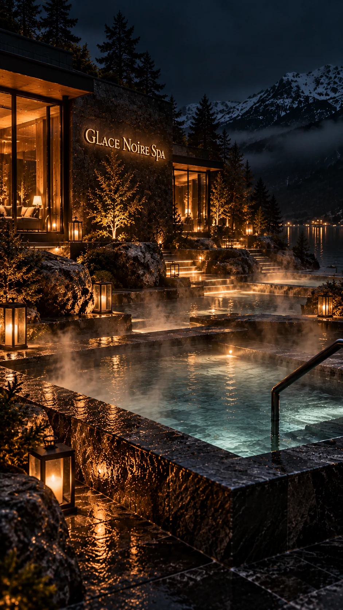
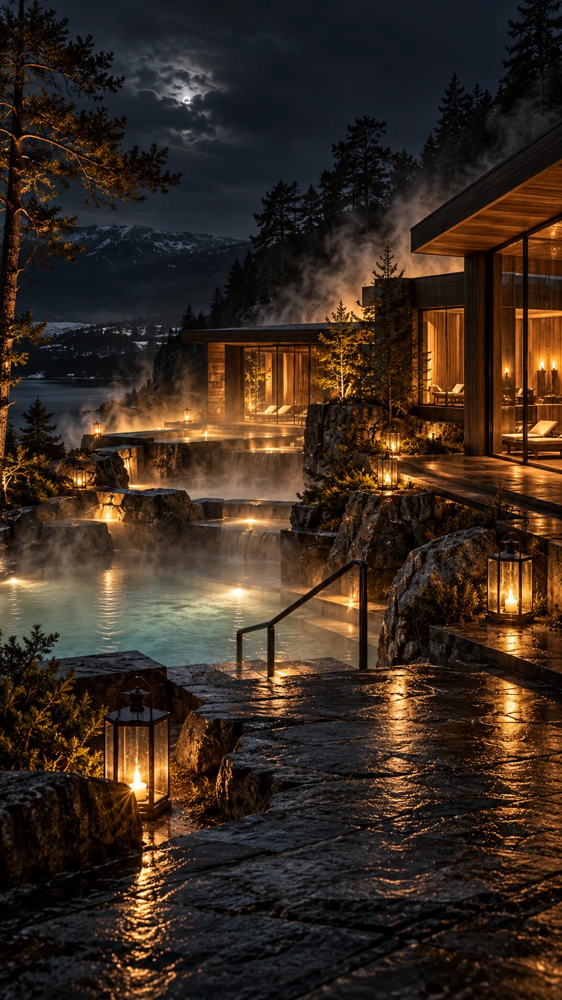
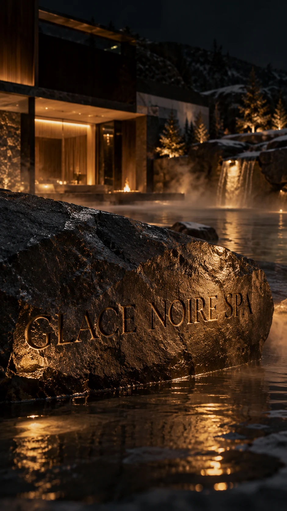
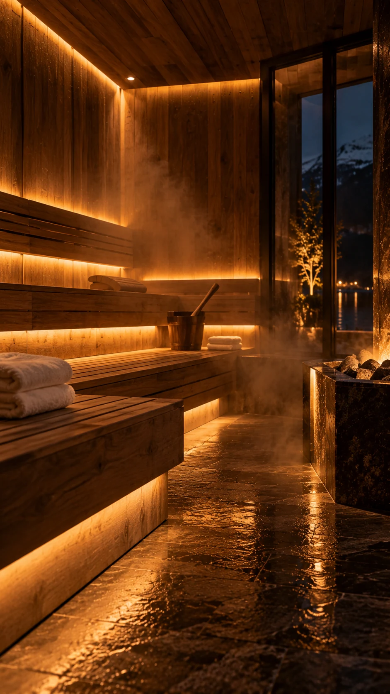
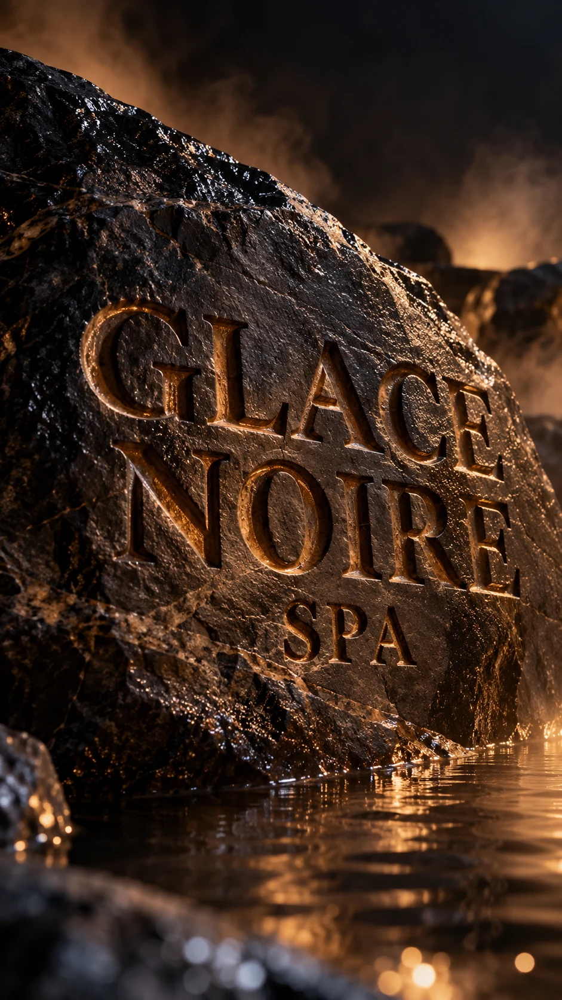

AN ALPINE STATE OF MIND
The night.The water.Nothing else.
Somewhere between the warmth of the water and the stillness of the mountains, the world can wait.
Discover your quietLESS NOISE. MORE FEELING.
A little further from everything. A little closer to yourself.
An imagined retreat carved from dark stone and warmed by amber light. Here, water meets the open air, steam drifts into the pines, and the evening belongs entirely to you.

Luxury is having nothing to do. And nowhere else to be.

Follow a slower rhythm.
Warmth. Water. Stillness. Three moments to make your own.

01 / THE SAUNACEDAR & AMBER LIGHT
Let the outside
world fall away.
Golden light follows the grain of the wood. Beyond the glass, the mountains rest in shadow. Settle into the warmth. There is no hurry here.
The detailsyou take with you.
A glimpse of the world we imagined. Select a moment to look closer.
AN IMAGINED PLACE. A REAL FEELING.
Some placesstay with you.
GLACE NOIRE SPA is a fictional alpine retreat, brought to life through art direction, AI imagery, film, and digital design. Have a place, a brand, or a feeling you want to bring to life?
Let’s create something extraordinary